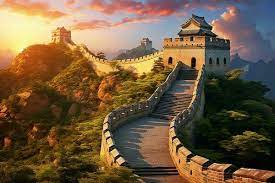

Great Wall of China üèØ
The Great Wall of China is an ancient series of walls and fortifications built to protect China from invasions. It winds through mountains, deserts, and plains, showcasing incredible engineering and strategic planning.
"The Great Wall of China stands as a monumental symbol of perseverance, defense, and the ingenuity of ancient Chinese civilization."
Gallery üèØ

